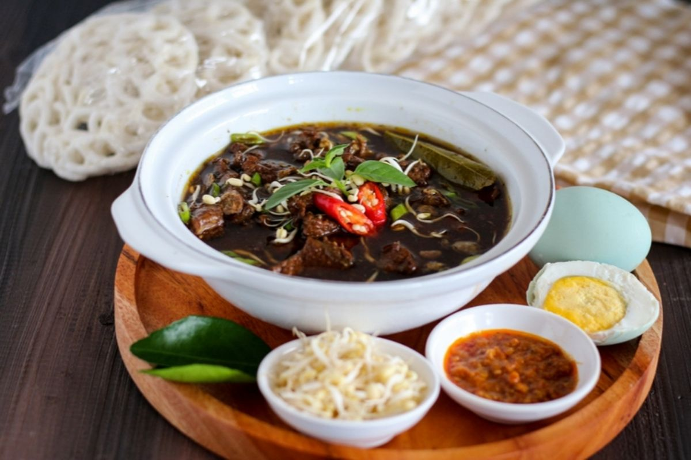
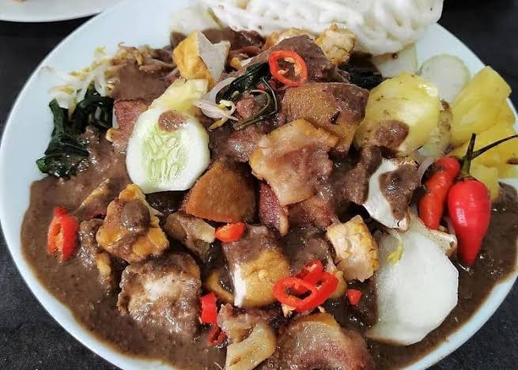
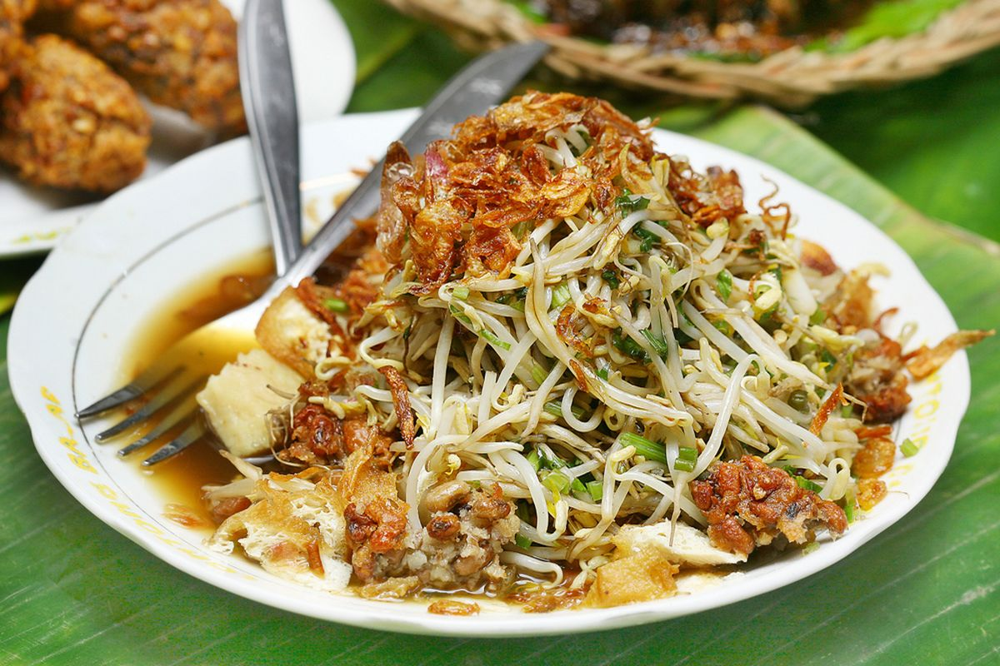
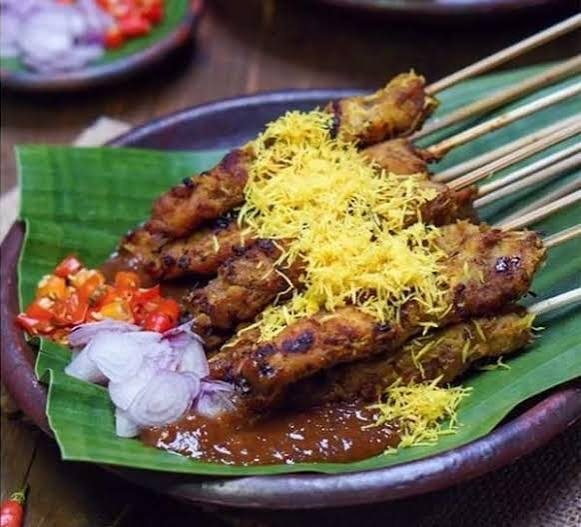
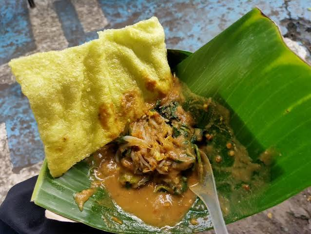
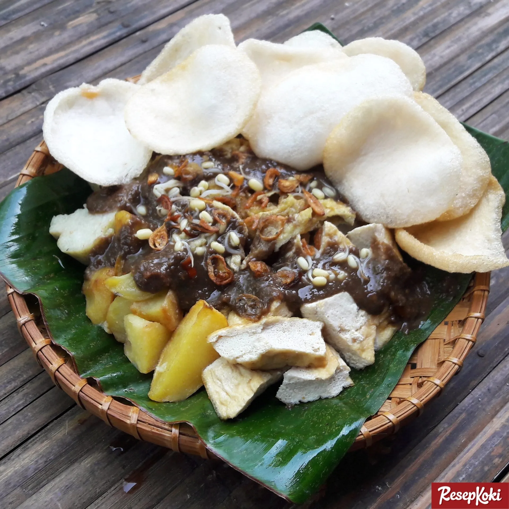
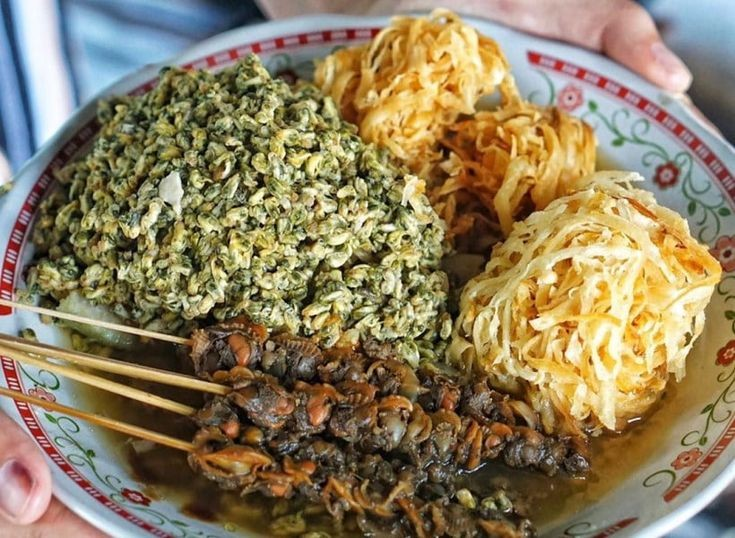

Tastes of Surabaya
Surabaya's food scene is bold, savory, and full of character. Here are a few dishes that define it, filter by type below.

Rawon
A dark, richly spiced beef soup colored by keluak (black nut), served with rice, bean sprouts, and salted egg. One of Surabaya's most iconic dishes.

Rujak Cingur
A distinctive mixed salad of vegetables, fruit, tofu, tempeh, and cingur (beef snout), tossed in a thick, pungent peanut-petis (shrimp paste) sauce.

Lontong Balap
Rice cakes (lontong) with bean sprouts, fried tofu, and lentho (bean fritters), served in a light savory broth and topped with petis and fried shallots.

Sate Klopo
Satay coated in seasoned grated coconut before grilling, giving it a smoky, nutty flavor that's different from typical Indonesian satay.

Semanggi Suroboyo
A traditional salad made from clover-leaf (semanggi) shoots, bean sprouts, and a sweet-spicy peanut-sweet potato sauce, sold with a distinctive squatting street-vendor style.

Tahu Tek
Fried and boiled tofu with lontong and potato fritters, doused in a sweet-savory peanut-petis sauce and topped with crackers.

Lontong Kupang
Tiny clam-like shellfish (kupang) served with lontong in a savory broth, traditionally eaten with a spicy lontong satay stick called sate kerang on the side.